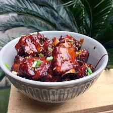

Sweet and Sour Ribs

Sweet and Sour Ribs
This is a very popular Chinese homestyle dish called 糖醋排骨 (literally sugar and vinegar spareribs; tang2 cu4 pai2 gu3 in Mandarin). The beauty about these ribs is that you can serve them with a variety of dishes. You can make it the centerpiece of the meal by serving it with egg fried rice or stir fry noodles. Alternatively, you can serve the ribs with jasmine rice and a few sides, such as Chinese garlic green beans and stir fried shredded potatoes.
These sweet and sour ribs are seriously finger licking good and it is easy to make, so lets get started!
Ingredients
- 1¼ to 1½ pounds strips of baby back ribs,between 1-1.5 inches wide
- 3 tablespoons sugar
- 1½ teaspoon salt
- 1½ teaspoon garlic powder
- 3 tablespoons zhenjiang vinegar, also known as chikiang vinegar
- 2 tablespoons soy sauce
- 1 tablespoon cooking rice wine
- 11½ tablespoons conola or vegetable oil
- 1/3 cup pineapple chunks (optional)
- toasted sesame seeds(optional)
- sliced scallions(optional)
- gochugaru, Korean red pepper flakes (optional)
Steps
- Before slicing the ribs into smaller pieces, check the bone side of the ribs and remove any membrane (or silverskin) that’s covering the bones (it’s a relatively thick white layer). The silverskin can turn leathery once cooked and it can prevent the marinade from penetrating the meat. Use your fingers to grab onto that membrane and rip it off.
- Slice the strips of baby back ribs into small pieces by slicing in between each bone. Transfer the ribs to a medium mixing bowl.
- To cook the ribs, heat the canola oil in a wok (or sauté pan with a lid) over high heat. Using tongs, transfer the pieces of ribs to the wok. Stir fry the ribs for about 1 minute.
- Pour the marinade into the wok and cover the wok with a lid. Reduce the heat to medium and cook the ribs for 7 minutes.
- Uncover the wok. It is normal if you see a lot of liquid in the wok. Increase the heat back to medium-high and continue cooking the ribs until there’s barely any liquid left in the wok. This should take about 3 to 4 more minutes (see note 2). Stir the ribs frequently to ensure that they don’t burn. The ribs should look darker as you reduce the liquid.
- Turn off the heat. Mix in pineapple chunks, if you like. Sprinkle the ribs with sesame seeds, scallions, and gochugaru, if desired.
- Transfer the sweet and sour ribs to a serving plate or bowl. Serve the sweet and sour ribs with Chinese garlic green beans, jasmine rice, or Chinese garlic cucumber salad.